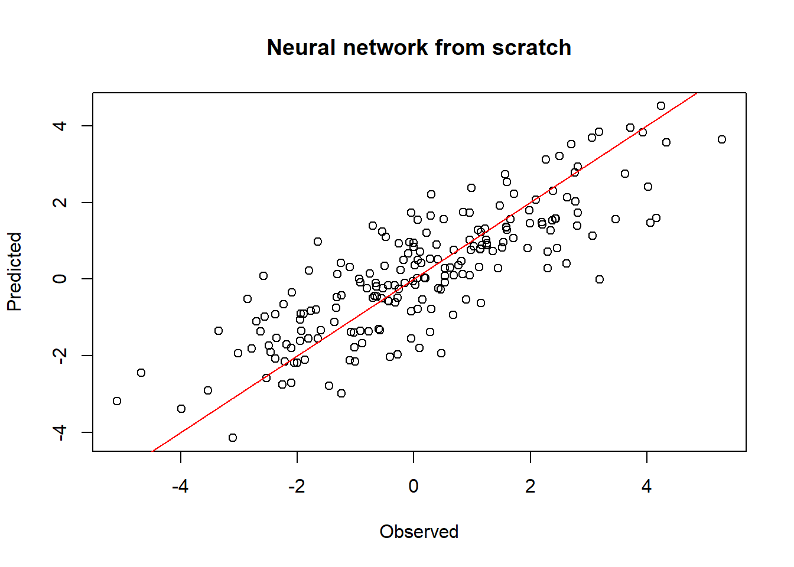
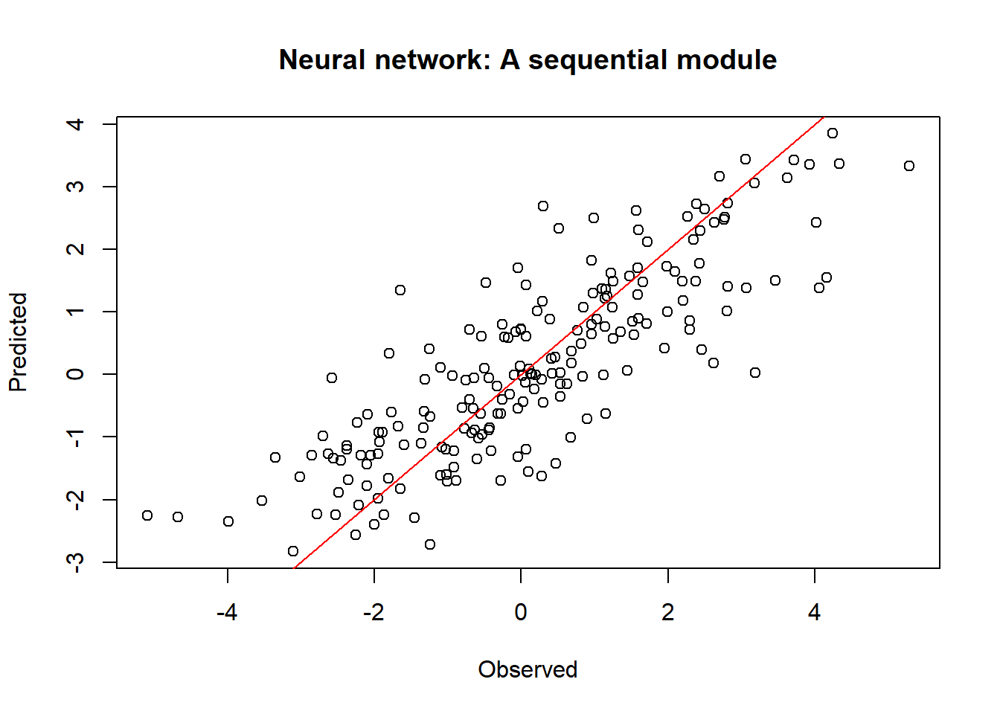
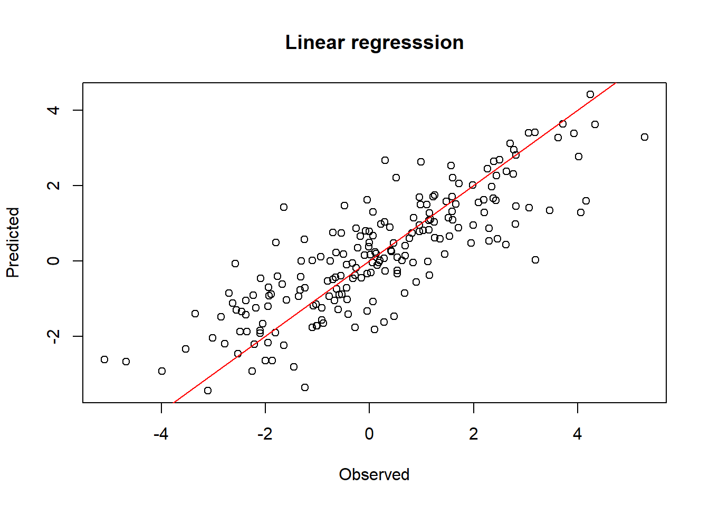

require(torch)A very basic implementation of a neural network
GPT-2
ChatGPT
Wolfram
I am documenting my learning of a neural network. The contents are mostly based on the e-book.
Load the torch library.
Data
# input dimensionality (number of input features)
dim_in <- 3
# number of observations in training set
n <- 200
x <- torch_randn(n, dim_in)
coefs <- c(0.2, -1.3, -0.5)
y <- x$matmul(coefs)$unsqueeze(2) + torch_randn(n, 1) # column matrixWeights and biases
\[f(\bf{X})=\bf{XW}+b\]
Using two layers with corresponding parameters, w1, b1, w2 and b2.
\[f(\bf{X})=(\bf{XW_1}+b_1)\bf{W_2}+b_2\]
y_pred <- x$mm(w1)$add(b1)$relu()$mm(w2)$add(b2)
# dimensionality of hidden layer
dim_hidden <- 32
# output dimensionality (number of predicted features)
dim_out <- 1
# weights connecting input to hidden layer
w1 <- torch_randn(dim_in, dim_hidden, requires_grad = TRUE)
# weights connecting hidden to output layer
w2 <- torch_randn(dim_hidden, dim_out, requires_grad = TRUE)
# hidden layer bias
b1 <- torch_zeros(1, dim_hidden, requires_grad = TRUE)
# output layer bias
b2 <- torch_zeros(1, dim_out, requires_grad = TRUE)Predicted values from the above network is computed as follows and using Rectified Linear Unit (ReLU) as the activation function
y_pred <- x$mm(w1)$add(b1)$relu()$mm(w2)$add(b2)Then the loss function can be created as follows
loss <- (y_pred - y)$pow(2)$mean()learning_rate <- 1e-2
### training loop ----------------------------------------
for (epoch in 1:200) {
### -------- Forward pass --------
y_pred <- x$mm(w1)$add(b1)$relu()$mm(w2)$add(b2)
### -------- Compute loss --------
loss <- (y_pred - y)$pow(2)$mean()
if (epoch %% 10 == 0)
cat("Epoch: ", epoch, " Loss: ", loss$item(), "\n")
### -------- Backpropagation --------
# compute gradient of loss w.r.t. all tensors with
# requires_grad = TRUE
loss$backward()
### -------- Update weights --------
# Wrap in with_no_grad() because this is a part we don't
# want to record for automatic gradient computation
with_no_grad({
w1 <- w1$sub_(learning_rate * w1$grad)
w2 <- w2$sub_(learning_rate * w2$grad)
b1 <- b1$sub_(learning_rate * b1$grad)
b2 <- b2$sub_(learning_rate * b2$grad)
# Zero gradients after every pass, as they'd
# accumulate otherwise
w1$grad$zero_()
w2$grad$zero_()
b1$grad$zero_()
b2$grad$zero_()
})
}Epoch: 10 Loss: 3.000276
Epoch: 20 Loss: 2.144468
Epoch: 30 Loss: 1.749418
Epoch: 40 Loss: 1.538223
Epoch: 50 Loss: 1.413543
Epoch: 60 Loss: 1.33866
Epoch: 70 Loss: 1.294799
Epoch: 80 Loss: 1.265488
Epoch: 90 Loss: 1.244047
Epoch: 100 Loss: 1.226817
Epoch: 110 Loss: 1.212944
Epoch: 120 Loss: 1.201177
Epoch: 130 Loss: 1.190159
Epoch: 140 Loss: 1.178311
Epoch: 150 Loss: 1.167546
Epoch: 160 Loss: 1.157191
Epoch: 170 Loss: 1.147406
Epoch: 180 Loss: 1.13854
Epoch: 190 Loss: 1.131134
Epoch: 200 Loss: 1.123894 Evaluate the model visually
# png("obs_pred.png")
y_pred <- x$mm(w1)$add(b1)$relu()$mm(w2)$add(b2)
plot(y, y_pred, xlab="Observed", ylab="Predicted",
main="Neural network from scratch")
abline(a=0, b=1, col="red")
# dev.off()
sum((as.numeric(y) - as.numeric(y_pred))^2)[1] 224.638The same model can be created in a more compactly way using a sequential module and using the activation function.
net <- nn_sequential(
nn_linear(dim_in, dim_hidden),
nn_relu(),
nn_linear(dim_hidden, dim_out)
)Train using the Adam optimizer, a popular choice.
opt <- optim_adam(net$parameters)
# opt <- optim_sgd(net$parameters, lr=0.001)### training loop --------------------------------------
for (epoch in 1:200) {
# forward pass
y_pred <- net(x)
# compute loss
loss <- nnf_mse_loss(y_pred, y)
if (epoch %% 10 == 0) {
cat("Epoch: ", epoch, ", Loss: ", loss$item(), "\n")
}
# back propagation
opt$zero_grad()
loss$backward()
# update weights
opt$step()
}Epoch: 10 , Loss: 3.195003
Epoch: 20 , Loss: 2.957336
Epoch: 30 , Loss: 2.741568
Epoch: 40 , Loss: 2.544529
Epoch: 50 , Loss: 2.363058
Epoch: 60 , Loss: 2.193356
Epoch: 70 , Loss: 2.034059
Epoch: 80 , Loss: 1.885832
Epoch: 90 , Loss: 1.748948
Epoch: 100 , Loss: 1.624851
Epoch: 110 , Loss: 1.513974
Epoch: 120 , Loss: 1.417417
Epoch: 130 , Loss: 1.33595
Epoch: 140 , Loss: 1.269105
Epoch: 150 , Loss: 1.216185
Epoch: 160 , Loss: 1.176016
Epoch: 170 , Loss: 1.147551
Epoch: 180 , Loss: 1.128549
Epoch: 190 , Loss: 1.116211
Epoch: 200 , Loss: 1.108102 Compare the prediction and observation
y_pred_s <- net(x)
plot(y, y_pred, xlab="Observed", ylab="Predicted",
main="Neural network: A sequential module")
abline(a=0, b=1, col="red")
# Mean squared error, L2 loss
sum((as.numeric(y) - as.numeric(y_pred))^2)[1] 221.6205Compared with the linear model
xdf <- as.data.frame(as.matrix(x))
names(xdf) <- c("x1","x2", "x3")
ydf <- as.data.frame(as.matrix(y))
names(ydf) <- c("y")
dat <- cbind(xdf, ydf)
m <- lm(y~x1+x2+x3, data=dat)
y_pred_lm <- predict(m, xdf)
ydf2 <- cbind(ydf, y_pred_lm)
plot(ydf2[,1], ydf2[,2], xlab="Observed", ylab="Predicted",
main="Linear regresssion")
abline(a=0, b=1, col="red")
# Mean squared error, L2 loss
sum((ydf$y - y_pred_lm)^2)[1] 218.2733